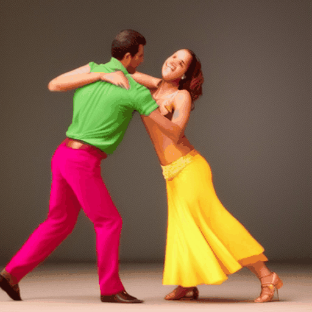
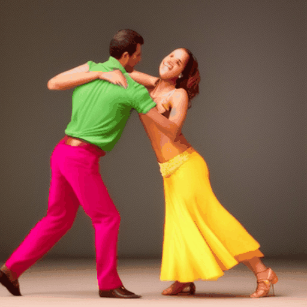

BibTeX
If you find our work useful, please consider citing our paper:
@article{wu2023freeinit,
title={FreeInit: Bridging Initialization Gap in Video Diffusion Models},
author={Wu, Tianxing and Si, Chenyang and Jiang, Yuming and Huang, Ziqi and Liu, Ziwei},
journal={arXiv preprint arXiv:xxxxxxx},
year={2023}
}

 
